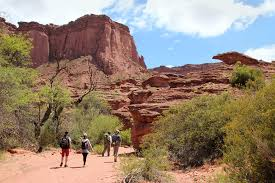
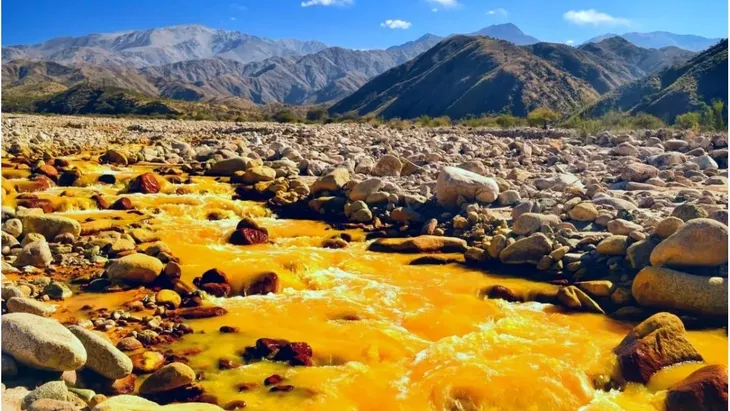
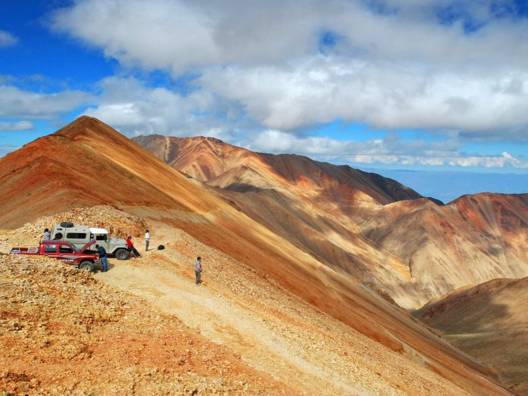
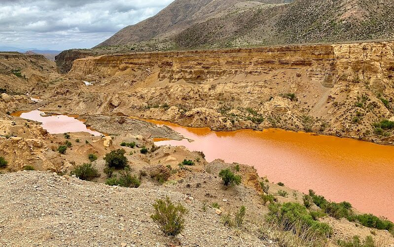
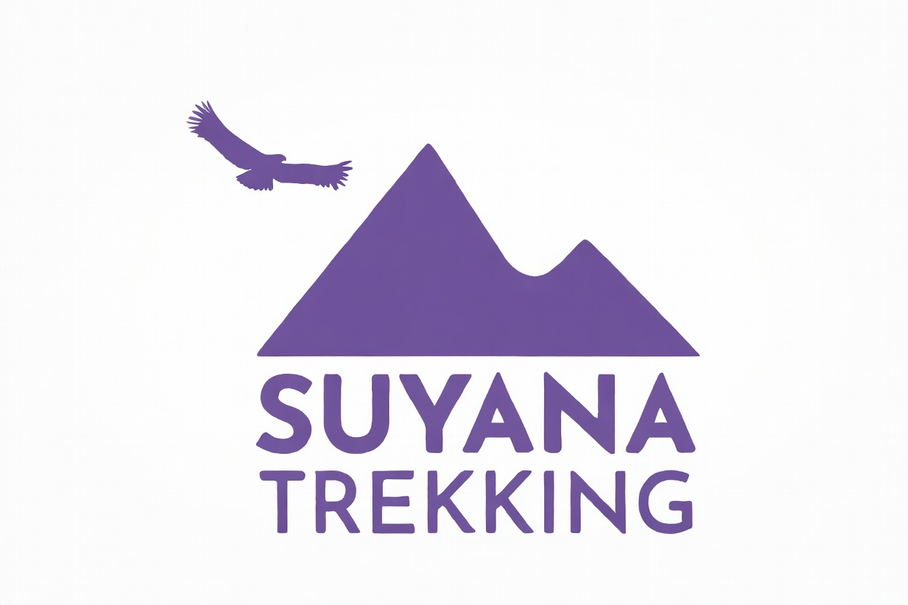
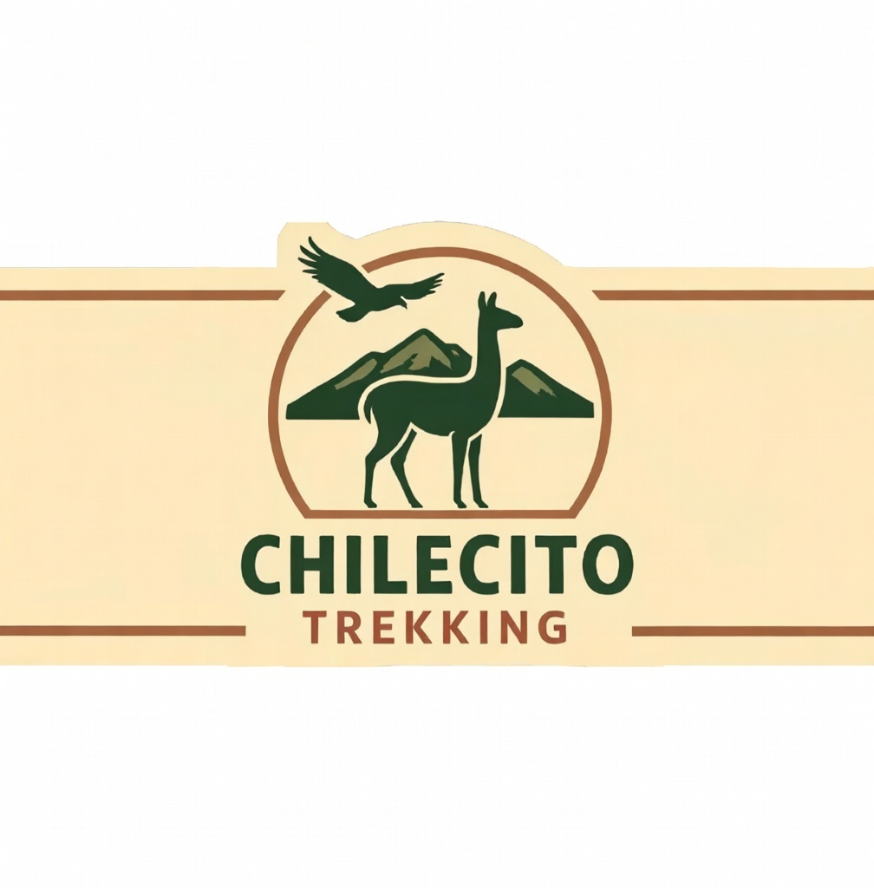

El paraíso del trekking en altura
La Sierra de Famatina ofrece senderos para todos los niveles: desde paseos familiares de 2 horas hasta ascensos exigentes de varios días. La altitud (entre 1.000 y 4.500 m en las rutas más accesibles) combina vistas espectaculares con aire puro y silencio absoluto. La mayoría de los senderos son gratuitos, pero se recomienda ir con guía local por seguridad (cambios bruscos de clima, orientación y animales).

Vista desde uno de los miradores más altos accesibles en trekking
Mejor época: marzo a junio y septiembre a noviembre. Llevar bastones, agua (mínimo 2-3 litros), protector solar, gorra, abrigo liviano y app de GPS offline.
Rutas destacadas

Quebrada de Don Eduardo
Trekking clásico de dificultad media (4-6 h ida/vuelta). Cañones rojizos, petroglifos prehispánicos, pozas naturales y vistas al valle. Altitud máxima ~2.200 m. Ideal para fotos y avistaje de cóndores. Distancia: ~9 km.

Río Amarillo – Cascada La Yareta
Ruta relajada (3-5 h) con aguas minerales amarillentas, vegetación verde en medio del desierto y una cascada de 20 m al final. Nivel bajo-medio. Excelente para familias o primerizos en altura. Posibilidad de baño en pozas en verano.

Gran Mirador Famatina
Sendero exigente (6-8 h) hasta un mirador a ~3.000 m con vistas 360° a la sierra completa, el valle y los viñedos lejanos. Requiere buena condición física. Guía obligatorio por orientación. Recompensa: amaneceres y atardeceres inolvidables.

Cañón del Ocre
Caminata corta pero impactante (3-4 h). Formaciones rocosas ocres y amarillas esculpidas por erosión, petroglifos antiguos y silencio absoluto. Nivel bajo-medio. Perfecto para combinar con Río del Oro en una misma mañana.
Todos los senderos respetan el principio "dejarlo mejor de lo que lo encontraste". Los guías locales también enseñan sobre la flora, fauna y leyendas mineras de la zona.
Prestadores de Senderismo

Suyuna Trekking
Excursiones en el Valle de Famatina y sierras.

Chilecito Trekking
Excursiones guiadas por las sierras y senderos locales.